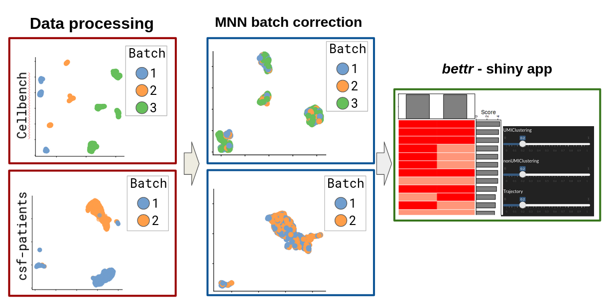

Continous benchmarking of single cell tools using renku
A framework for open and continuous community benchmarking of bioinformatic tools
Project Website: https://RenkuLab.io/
Source code: https://renkulab.io/gitlab/omnibenchmark
License: Apache License, Version 2.0
Almut Luetge1,2 Anthony Sonrel1,2 Oksana Riba Grognuz3 Izaskun Mallona Gonzalez1,2 **Charlotte Soneson2,4 Pierre-Luc Germain1,2,5 Federico Marini6 Gavin Lee3 Tao Sun3 Christine Choirat3 Rok Roškar3 Mark D. Robinson1,2
1 Institute for Molecular Life Sciences, University of Zurich, Switzerland
2 SIB Swiss Institute of Bioinformatics, Switzerland
3 Swiss Data Science Center, ETH Zurich and EPFL, Switzerland
4 Friedrich Miescher Institute, Basel, Switzerland
5 D-HEST Institute for Neurosciences, ETH Zürich
6 Center for Thrombosis and Hemostasis (CTH), Johannes Gutenberg University Mainz
BACKGROUND
Benchmarking is a critical step for the development of bioinformatic methods and provides important insights for their application.
The current benchmarking scheme has many limitations:
– it is a snapshot of the available methods at a certain time point
– it can be outdated, already at the time of a publication
– low comparability: different procedures, different datasets, different evaluation criteria
– all of the above can lead to different conclusions among benchmarks made at different time points or at different groups.
CONCEPT:
\(\checkmark\) Here we propose a new modular and extensible framework based on a free open-source analytic platform, RENKU, to offer a continuous and open community benchmarking system.
\(\checkmark\) The framework consists of data, method and metric repositories (or “modules”) that are connected via a knowledge graph from the RENKU system.
\(\checkmark\) The results could then be displayed in an interactive dashboard to be openly explored by any analyst looking for recommendations of tools
\(\checkmark\) Any new data, method or metric can be added by the community to extend the benchmark
Key features of the developed benchmarking framework:
- Update the results of the benchmark periodically to provide the analysts with the latest recommendations
- Be easily extended thanks to templates for data, methods or metrics
- Fully follow the
FAIR principlesthanks to a Docker image system, an integration with Gitlab and the fullprovenance(tracking of inputs, commands and generated files) - Use a variety of programming languages commonly used in bioinformatics: R, Python, Bash, Julia,…
![Overview of the proposed benchmarking framework on the Renku platform. Each step of the benchmark consists of a set of repositories (a.k.a “modules”) that perform a coordinated task (e.g. standardized data processing). Any new data, method or metric can be easily integrated in the framework by the scientific community and trigger a continuous delivery to the analysts with up-to-date recommendations. Each component of the framework is automatically tracked by the knowledge graph of Renku and contain Docker images to provide fully reproducible results.](figures/renku_shema.png)
Figure 1: Overview of the proposed benchmarking framework on the Renku platform. Each step of the benchmark consists of a set of repositories (a.k.a “modules”) that perform a coordinated task (e.g. standardized data processing). Any new data, method or metric can be easily integrated in the framework by the scientific community and trigger a continuous delivery to the analysts with up-to-date recommendations. Each component of the framework is automatically tracked by the knowledge graph of Renku and contain Docker images to provide fully reproducible results.
PROTOTYPE
Based on the above concept, we are currently building a prototype for community-based benchmarking of single cell batch correction methods.
The research in single-cell is a perfect use-case, where 900 tools have been developed in only a few years [1] and where the benchmarking efforts are often not coordinated, not extendable and not reproducible.
Our prototype consists of:
- Two datasets of 2370 genes x 3613 cells separated in 2 batches and 1401 genes x 13575 cells separated in 3 batches [2, 3]
- Common preprocessing consisting of normalization, highly-variable genes selection, dimensionality reduction.
- An integration using the MNN method [4]
- Evaluating batch-effect using the LISI metric [5] and cms score [3]
- Exploring the results using the bettr [6]

Figure 2: Example of the proposed framework applied to benchmark batch correction methods of scRNA-seq data. Datasets are uniformly processed and passed to a batch-correction method of a separated module. Results are displayed in a shiny app for an interactive exploration of the results. All modules are connected through the Renku knowledge graph, which allows to track workflows from a set of repositories using different environments and programming languages.

RENKU is an open and collaborative platform which provides a knowledge infrastructure for the entire research life cycle. The platform and its tools are built on top of a stack of open-source components and aims to make data science reproducible.
On RENKU:
Fully interactive sessions can be accessed through the browser, with no local installation needed
Versioning and containers ensure precise and reproducible computational environments
Datasets and workflows are automatically tracked in a
knowledge graph, which can be queried from within a project, a group of projects or even across deploymentsWorkflows can be re-run or updated automatically when inputs such as datasets or scripts change
CI/CD can be leveraged to automate repetitive and predictable tasks, such as fetching results of a piece of analysis to integrate into a dashboard

References
1. Zappia L, Phipson B, Oshlack A (2018) Exploring the single-cell RNA-seq analysis landscape with the scRNA-tools database. PLOS Computational Biology 14:e1006245. https://doi.org/10.1371/journal.pcbi.1006245
2. Su S, Tian L, Dong X, et al (2020) CellBench: R/Bioconductor software for comparing single-cell RNA-seq analysis methods. Bioinformatics 36:2288–2290. https://doi.org/10.1093/bioinformatics/btz889
3. Lütge A, Zyprych-Walczak J, Kunzmann UB, et al (2021) CellMixS: Quantifying and visualizing batch effects in single-cell RNA-seq data. Life Science Alliance 4: https://doi.org/10.26508/lsa.202001004
4. Haghverdi L, Lun ATL, Morgan MD, Marioni JC (2018) Batch effects in single-cell RNA-sequencing data are corrected by matching mutual nearest neighbors. Nature Biotechnology 36:421–427. https://doi.org/10.1038/nbt.4091
5. Korsunsky I, Millard N, Fan J, et al (2019) Fast, sensitive and accurate integration of single-cell data with Harmony. Nature Methods 16:1289–1296. https://doi.org/10.1038/s41592-019-0619-0
6. Marini F, Soneson C (2021) Bettr: A better way to explore what is best